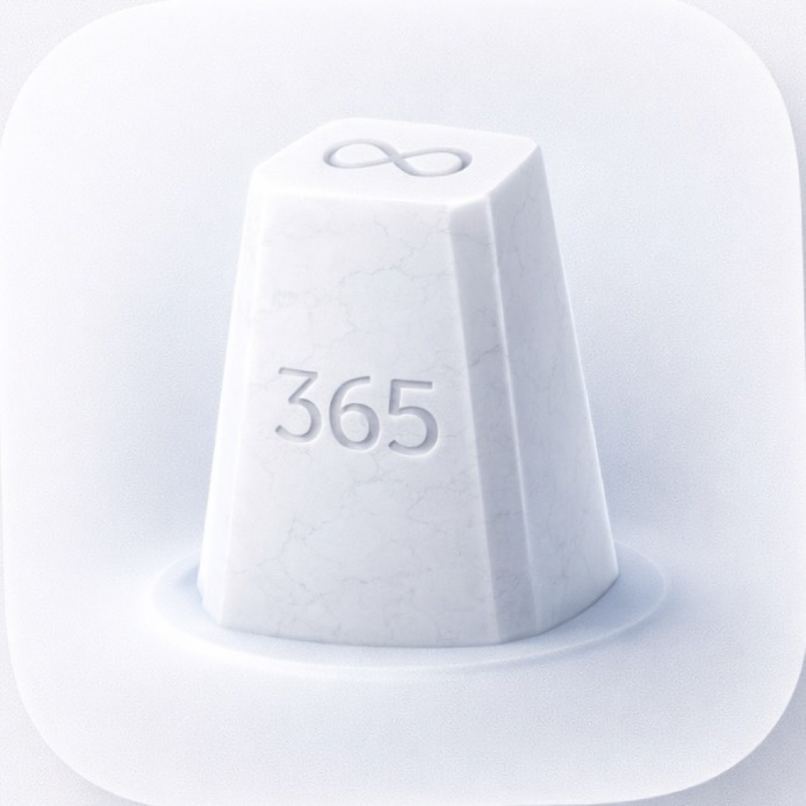

← Back to Portfolio

Milestones
Because your life isn't one moment — it's all of them.
In Development
About
A seven-sense journal for iOS. Capture moments through sight, hearing, touch, smell, taste, balance, and body awareness — timestamped, geotagged, and weather-tagged automatically.
Every entry filed as YYYY MMM DD HHMM Title — the timestamp is the arbiter of truth.
The Seven Senses
👁
Sight
Camera, album, share sheet
👂
Hearing
ShazamKit, ambient sound
✋
Touch
Texture, temperature
👃
Smell
Describe the scent
👅
Taste
Food photos, flavor notes
🧭
Vestibular
Movement, steps, GPS
🫀
Proprioception
Heart rate, workout, body state
Features
The Journal
- Every entry timestamped, geotagged, and weather-tagged automatically
- Write about the past, present, or future — any date you choose
- Attach photos from camera, album, or the web via share sheet
- Seven sense prompts guide your memory capture
The Index
- Your life's significant dates — a living timeline in the back of the journal
- Add milestones anytime: birthdays, graduations, moves, losses, firsts
- Tap any milestone to see real historical weather for that date and location
- Promote any journal entry to a milestone
The Time Machine
- Navigate your entire life on a visual timeline
- Historical weather via WeatherKit (data back to the 1970s)
- Milestone bookmarks with custom emoji markers
- Dial interface to spin through time
Share Sheet
- Capture from Safari, Photos, or any app
- News articles, obituaries, old photos, documents, PDFs
- EXIF date and location extracted automatically
Auto-Capture
- WeatherKit — conditions on every entry
- CoreLocation — geotagged and timestamped
- HealthKit — steps, heart rate, activity via Apple Watch
- ShazamKit — identify and save songs from the world around you
Roadmap
| Version |
Name |
Focus |
| v1.0 |
The Journal |
Core entries, weather, location, the index |
| v1.1 |
Sound & Senses |
ShazamKit, HealthKit, hearing, vestibular |
| v1.2 |
Share Sheet |
Share extension, PDFs, news clippings |
| v1.3 |
Time Machine |
Visual timeline, milestone bookmarks, dial UI |
| v1.4 |
Life Integration |
iCal, anniversaries, food logging, GPS routes |
Tech Stack
- SwiftUI + SwiftData + CloudKit
- WeatherKit — current + historical weather
- ShazamKit — song identification
- MusicKit — playback
- HealthKit — biometric + activity data
- CoreLocation + CoreMotion
- PhotosUI + EventKit + QuickLook